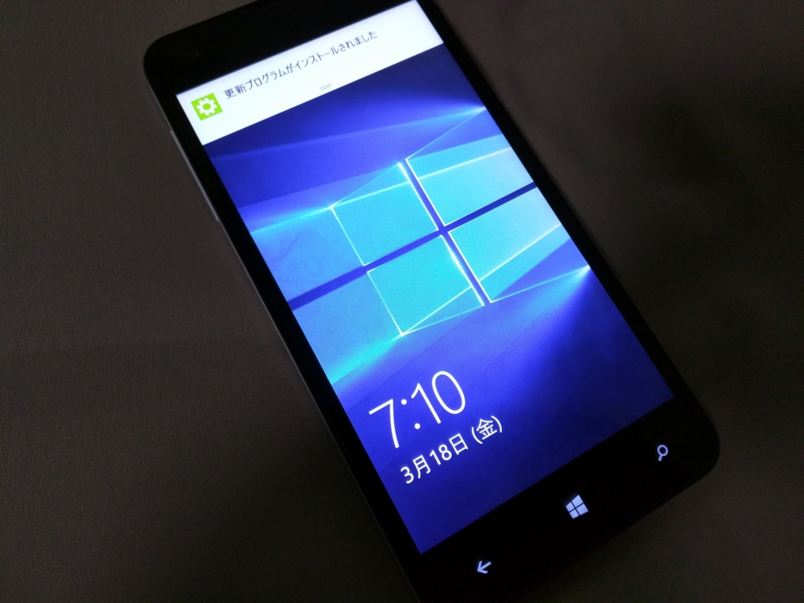
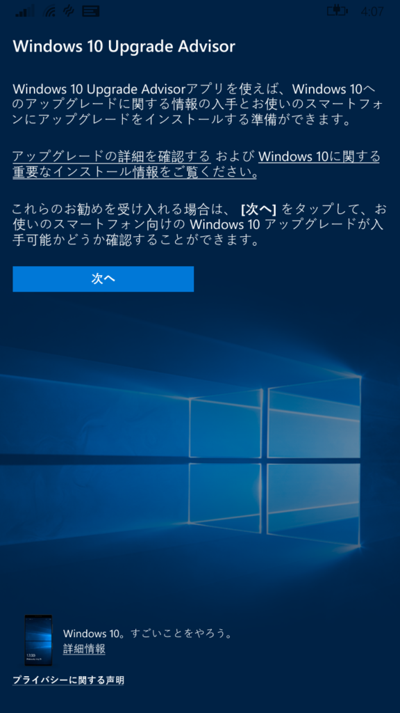
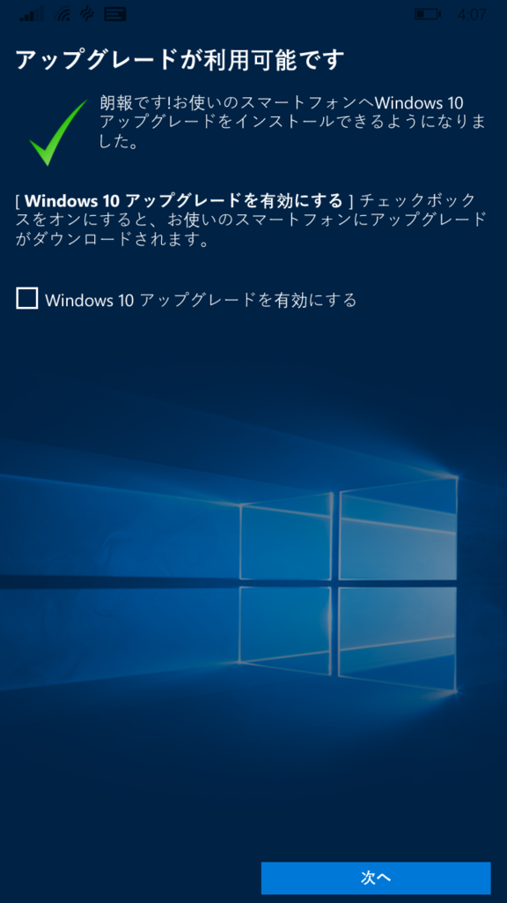
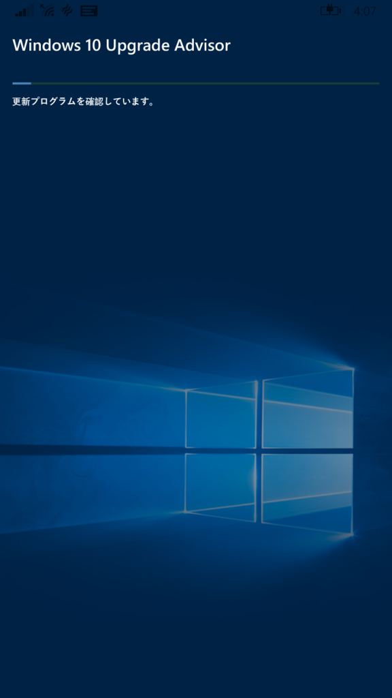
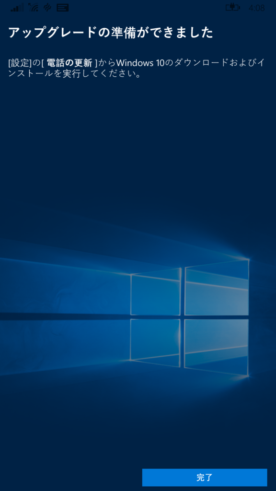
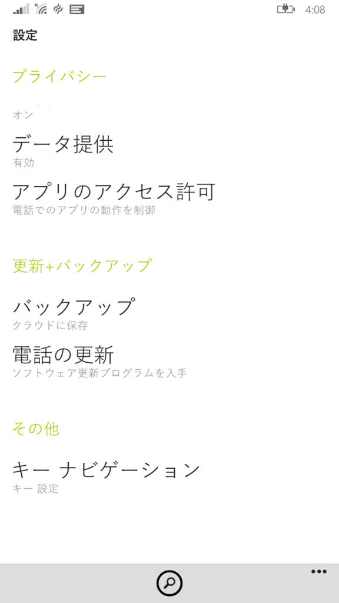
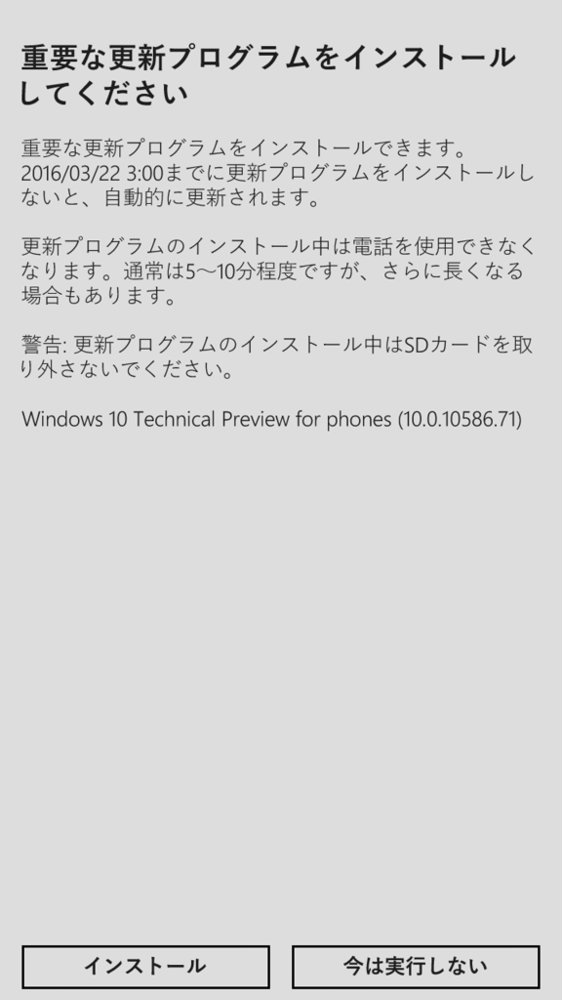
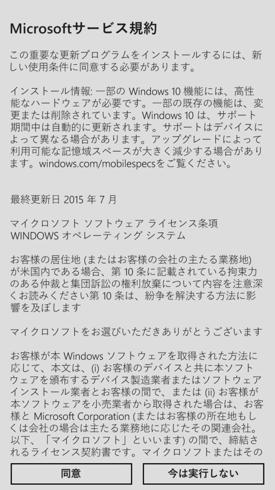
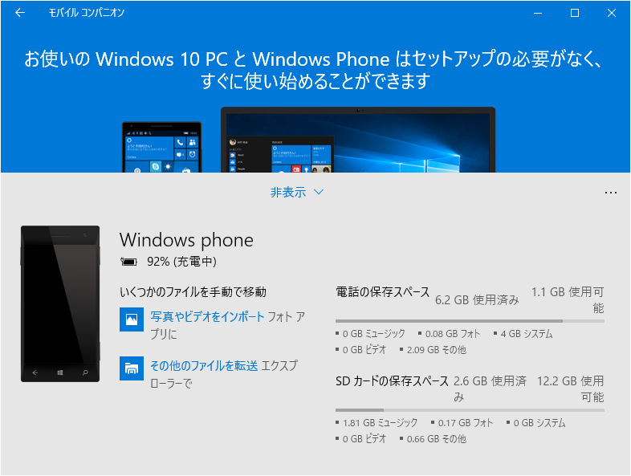
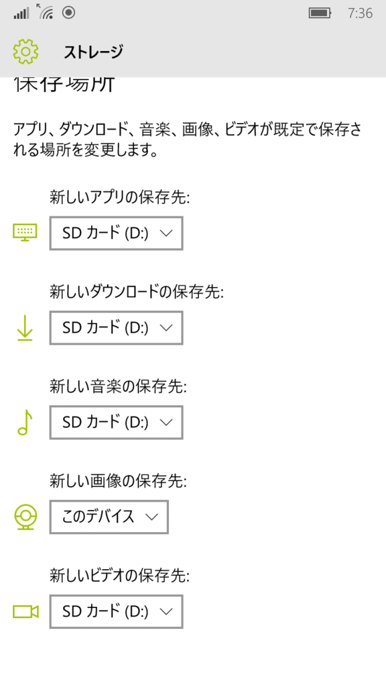

わいの MCJ MADOSMA Q501 が Windows 10 Mobile になったやで！
公開日：

MCJ MADOSMA Q501 にも OTA による Windows 10 Mobile の配信が始まったようです！
For related changes to Windows 10 Mobile Insider Preview builds https://t.co/AdStNnW0qr
— Gabriel Aul (@GabeAul) 2016年3月17日
遂に、遂に降ってきました。。
— Takehiro Hirai (@hirai_takehiro) 2016年3月17日
ほんま、いつまで待たせたんや。もう来おへんのかと思ったで（歓喜
Windows 10 Mobile へアップデートするには、「Upgrade Advisor」というアプリを利用する。
むかしとえらいユーザーインターフェイスが違う気がするが（【レビュー】Windows Phoneのアップデートを支援するMicrosoft公式アプリ「UpdateAdvisor」 - 窓の杜）、気にしない。
   
「アップグレードの準備が完了しました」という画面になったら、「設定」アプリの［更新＋バックアップ］－［電話の更新］を開いてアップデート処理を行う（アプリからこの画面へ遷移してほしいもんだ）。
  
あとは我慢強く待つだけ。
— だるやなぎ（エリス教に改宗） (@daruyanagi) 2016年3月17日
ウチの環境では1時間ぐらいかかった。
あと少しです…… pic.twitter.com/Wwm8vCCe80
— だるやなぎ（エリス教に改宗） (@daruyanagi) 2016年3月17日
えらく時間を食ったのは、SD カードにアップデートデータが保存されていたから？ 後述するけど、SD カードがあんまり具合よくないのかもしれない。
— だるやなぎ（エリス教に改宗） (@daruyanagi) 2016年3月17日
とりあえず無事アップデートが完了。ねんがんの うぃんどうずてんを てにいれたぞ！ ちなみに OS のビルドは 10.0.10586.71 との由（バージョン 1511）。

ちょっとした問題
スクリーンショットの撮影に失敗するようになった。

データの保存先を SD → このデバイス に変更して解決。念のため、ほかの項目も このデバイス へ変更しておいた。
メモリカードの具合がよくないのか、ドライバーの問題なのかはちょっとまだわかんない。SD カードに保存してあった音楽は再生できたので、読み込みは問題ない。アプリの保存先も SD カードだったのだけど、問題なくアップデートできている。